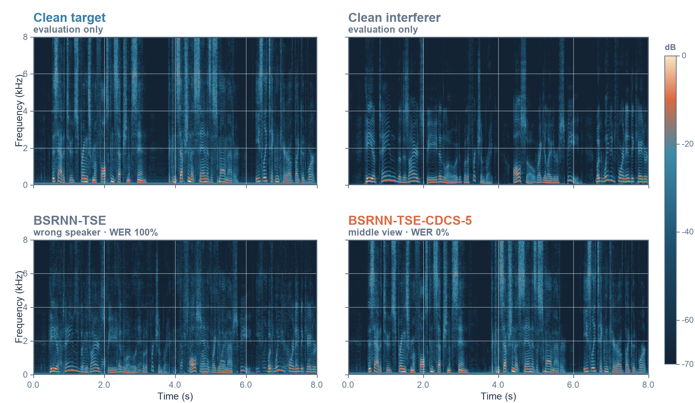
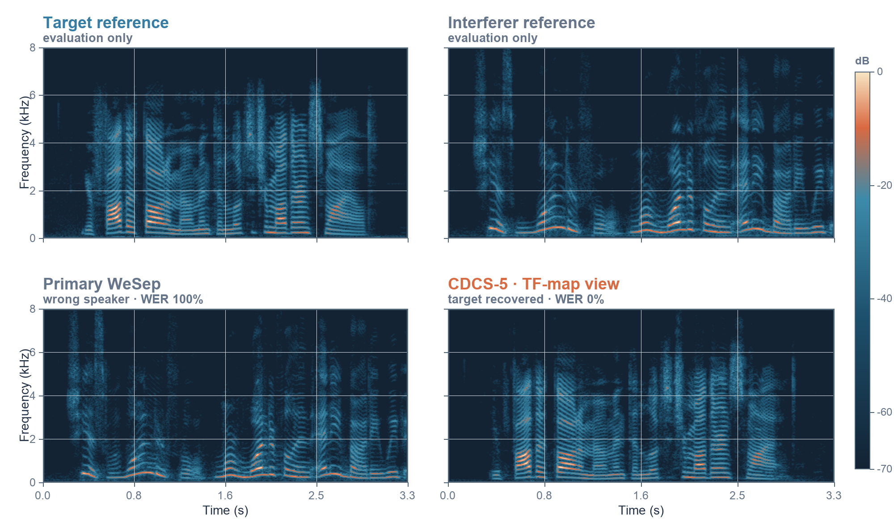
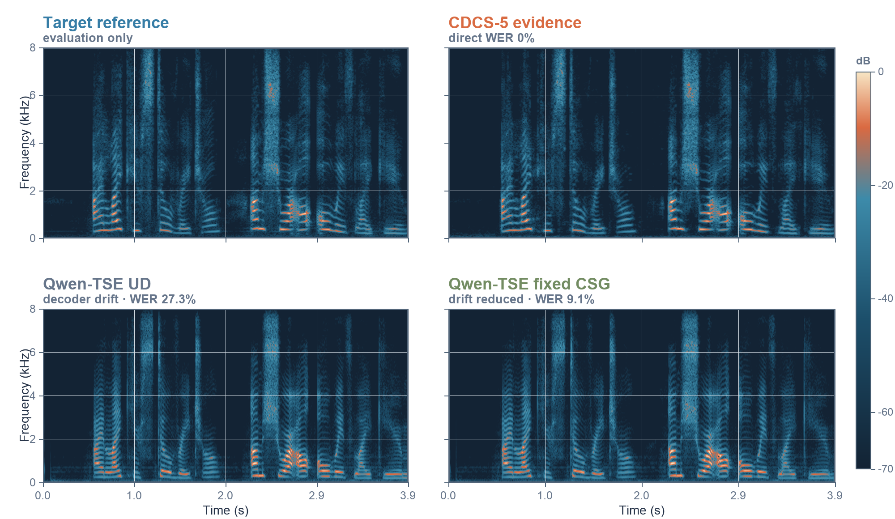

Research demo · ICASSP 2027 submission in preparation
Repair Before Grounding: Conditioning-Diverse Candidate Selection for Confusion-Resilient Target Speaker Extraction
A target speech extractor can produce clean, intelligible speech from the wrong speaker.
We repair the acoustic evidence first, then study how an LLM speech decoder can be kept
faithful to that evidence.
Study status: Frozen Noisy TEST is complete; reported Clean TEST rows are frozen, with Clean GNR pending.
Abstract
LLM-based speech generation cannot recover target content that is absent from its acoustic
conditioning. We therefore treat wrong-speaker extraction as an evidence-interface failure.
From the same mixture and target enrollment available at inference, a frozen TSE family
produces five complementary candidates. A frozen speaker encoder selects the candidate most
consistent with the enrollment. The selected waveform can be used directly or supplied to a
token-based speech generator with constrained speech grounding (CSG). The central claim is
deliberately narrow: candidate selection repairs speaker confusion; CSG controls drift in
the optional generative branch.
How it works
The method has two distinct jobs: first repair the acoustic evidence when the primary
extractor follows the wrong speaker; then, only if a generated endpoint is wanted, constrain
Q-Full with that repaired evidence. Use the controls below to inspect each stage.
Generate complementary evidence.
Four candidates use deterministic views of the same target enrollment; a fifth uses a
TF-map/context conditioning expert.
Select for target consistency.
Pool D chooses the candidate with the largest frozen ECAPA cosine to the full enrollment.
No clean target, transcript, WER, or cohort label is available to the selector.
Use or ground the repaired evidence.
Pool D direct is the fidelity endpoint. The optional Q-Full branch compares unconstrained
decoding with CSG and Grounded Neighborhood Refinement (GNR).
Input 1Speech mixture
Input 2Target enrollmentT
→
Confusion repairFive complementary TSE candidates
FullFirstMiddleLastTF-map
→
Pool DChoose target-consistent evidence
largest frozen ECAPA cosine to enrollment
Figure 1. Full inference structure. Only the mixture and
target enrollment are deployable inputs. Clean sources and transcripts enter only after
inference for evaluation.
Main claim: Pool D repairs wrong-speaker evidence before generation.
CSG and GNR study how tightly an optional LLM decoder can remain attached to that evidence;
they are not presented as replacements for the stronger direct waveform endpoint.
Interactive walkthrough
From speaker confusion to grounded speech
01
Repair the evidence before asking the LLM to generate.
The same mixture is extracted with complementary views of the same enrollment. Pool D
chooses the waveform most similar to the enrolled target; it never sees a clean target,
transcript, WER, or cohort label.
Why it matters: an LLM cannot reconstruct target words that are missing because the front end selected the interferer.
Pool DTarget-consistent evidencearg max enrollment cosine
02
Q-Full proposes the next discrete speech token.
The mixture, target-speaker embedding, and Pool-D evidence tokens condition one
autoregressive generator. Unconstrained decoding uses only the model logits at each step,
so a fluent proposal can still drift away from the repaired content.
UD: the raw Q-Full operating point, used as the unconstrained-decoding baseline.
mixturespeaker embeddingevidence tokens
→
autoregressive modelQ-Full6,561 token logits
→
03
CSG discounts proposals that disagree with nearby evidence.
Each FSQ token is an eight-coordinate ternary code. CSG subtracts a Hamming-distance
penalty from the Q-Full logit, pulling generation toward the evidence token at the same
or a nearby time step.
Fixed CSG λ=1, w=0Nominal adaptive run realized as λ=.5, w=1 for every noisy trial
04
GNR permits a bounded local edit around the complete CSG anchor.
For each position, GNR intersects the raw Q-Full Top-20 with the radius-2 FSQ Hamming
ball around the immutable anchor. The anchor is always retained and is replaced only by
a strictly higher-logit allowed proposal.
No feedback: an accepted edit never changes the history used to score later positions.
a₁a₂a₃aₜaₜ₊₁…aT
anchor aₜd=0 · fallback
proposal p₁d=1 · higher logit ✓
proposal p₂d=2 · allowed
proposal p₃d=4 · rejected
a₁a₂a₃p₁aₜ₊₁…aT
05
Report content fidelity and speaker identity separately.
Pool D direct is the evidence-repair endpoint. UD, CSG, and GNR isolate what the optional
generator changes. WER measures target-content consistency; C-sw. and A-sw. diagnose
content and acoustic speaker switching; DNSMOS/UTMOS estimate perceptual quality.
Interpretation: lower switch rates do not automatically imply lower WER or better target content.
Lower is better for WER and switch rates; higher is better for speaker margin and estimated
perceptual quality. Results marked DEV are used for selection and must not be presented as TEST.
Clean TEST
Frozen held-out evaluation, 6,000 trials.
System
WER ↓
C-sw. ↓
A-sw. ↓
Spk. margin ↑
DNSMOS P.808 ↑
Primary WeSep
13.68
7.00
6.98
.449
3.688
Pool D direct
6.54
.88
.78
.506
3.699
Pool D → Q-Full UD
14.08
1.00
.43
.422
3.705
Pool D → fixed CSG
12.74
1.00
.23
.422
3.699
Pool D → selected GNR
—
—
—
—
—
Reading. Pool D direct more than halves WER and sharply reduces speaker
confusion. CSG improves the Q-Full branch over unconstrained decoding, but does not overtake
the direct selected waveform.
Reading. Evidence repair improves content fidelity, while generation improves
estimated perceptual quality and acoustic speaker consistency at the cost of higher WER.
GNR is retained as a negative ablation rather than promoted as the main method.
Noisy TEST
Frozen natural-noise TEST, 6,000 trials from the one permitted run.
System
WER ↓
C-sw. ↓
A-sw. ↓
Spk. margin ↑
DNSMOS P.835 OVRL ↑
UTMOS ↑
Primary WeSep
46.17
15.57
14.57
.304
2.291
2.061
Pool D direct
35.64
7.95
7.17
.363
2.201
1.990
Pool D → Q-Full UD
58.00
10.13
1.68
.378
3.086
3.253
Pool D → fixed CSG
53.90
9.48
.52
.386
3.082
3.147
Pool D → CSG (λ=.5, w=1; nominal adaptive)
50.99
9.72
.98
.384
3.093
3.196
Pool D → CSG (λ=.5, w=1) → GNR (K20/R2)
54.79
9.65
.98
.384
3.095
3.207
WER: Whisper-small.en ASR-consistency WER against the target transcript; it is a content-fidelity proxy, not a listening score.
C-sw.: content-switch rate, based on whether ASR content is closer to the interferer than the target.
A-sw.: acoustic-switch rate, based on whether output speaker similarity favours the interferer over the enrolled target.
Important: C-sw. and A-sw. are operational metrics defined for this study and must be introduced explicitly in the paper.
Audio examples
Listen from left to right. Clean targets and interferers are shown only for interpretation;
the deployable system never accesses them. Starting a clip automatically pauses the previous one.
Case 1 — recovery from an enrollment view
The primary follows the interferer. A deterministic two-second view of the same enrollment
produces target-consistent evidence. WER: 100% → 0%; speaker margin:
−.285 → +.520.
View spectrogram comparison

Case 2 — complementary TF-map/context evidence
The speaker-vector candidates fail, but the alternative conditioning expert recovers the
target. WER: 100% → 0%; speaker margin: −.543 → +.505.
View spectrogram comparison

Case 3 — constrained LLM grounding
The same repaired evidence enters Q-Full. CSG reduces decoder drift, although the direct
selected waveform remains strongest: UD 27.3%, CSG 9.1%,
direct 0% WER.
View spectrogram comparison

Noisy TEST listening cases are not yet published. They will be selected from the completed frozen outputs by the predeclared deterministic rule, not by manual cherry-picking.
Robustness and cost
Figure 2. Candidate recovery by controlled SNR on frozen Noisy DEV.
Interpretation
Recovery rises at 10–15 dB, where a wrong-speaker extraction is identifiable and usable
complementary target evidence remains available. At −5 dB, both target and interferer
evidence are weak, so the strict primary-swap cohort is small.
Selected recovery across Noisy DEV: 54.87%
Five-candidate oracle ceiling: 62.55%
Control regression: .391%
Clean DEV deployment cost
Configuration
Candidates
Q-Full
RTF ↓
Peak VRAM
Swap recovery ↑
Primary
1
—
.057
20.37 GiB
0.00%
Pool B direct
2
—
.105
20.38 GiB
83.21%
Pool D direct
5
—
.208
20.47 GiB
87.65%
Pool B + CSG
2
1 pass
.473
20.38 GiB
79.01%
Pool D + CSG
5
1 pass
.573
20.47 GiB
80.74%
Evaluation protocol
Selection on DEV. Candidate pool, thresholds, CSG and GNR choices are fixed before TEST.
Frozen TEST. Code, model assets and inputs are hash-checked; Noisy TEST is executed exactly once.
Paired analysis. The final report includes paired confidence intervals and switch-specific significance tests.
Reproducible examples. Audio cases use a deterministic selection rule rather than manual cherry-picking.
What this work claims
Target-consistent candidate selection repairs many wrong-speaker TSE failures, and better
acoustic evidence makes downstream grounding more reliable. CSG reduces drift within the
tested Q-Full branch.
What it does not claim
The LLM branch does not achieve the best WER. TF-map/context is an auxiliary conditioning
expert in the same TSE family, not a wholly independent architecture. ASR-consistency WER,
DNSMOS and UTMOS do not replace human listening tests, and simulated mixtures do not establish
universal real-world robustness.